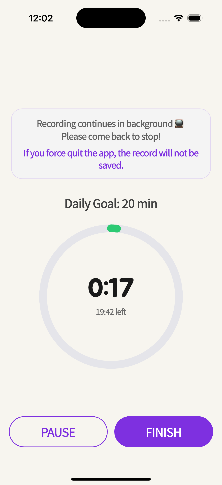
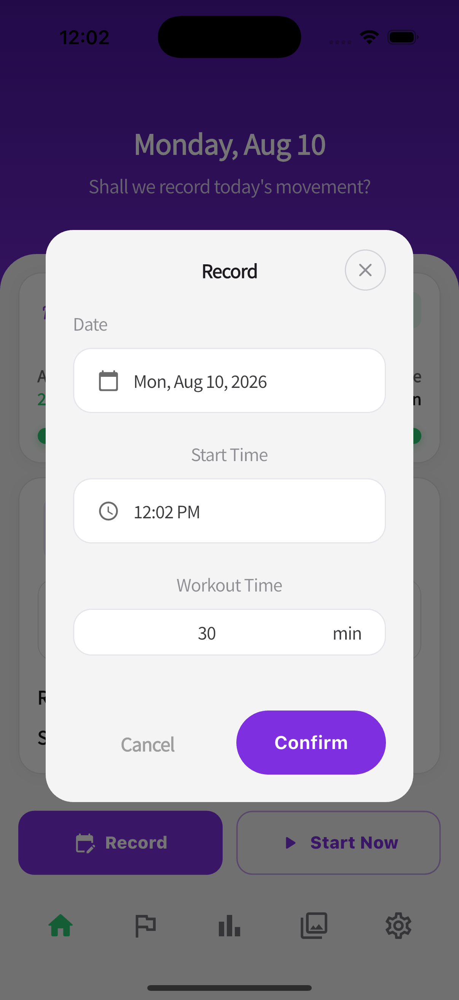
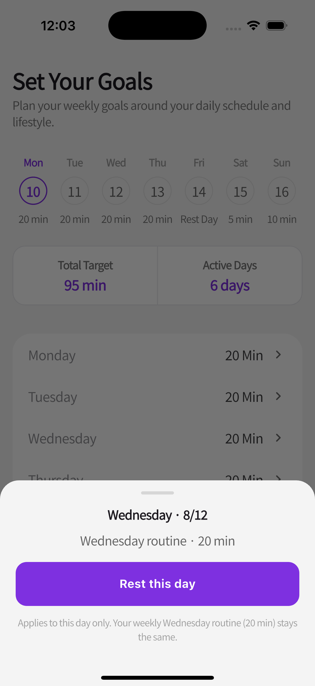
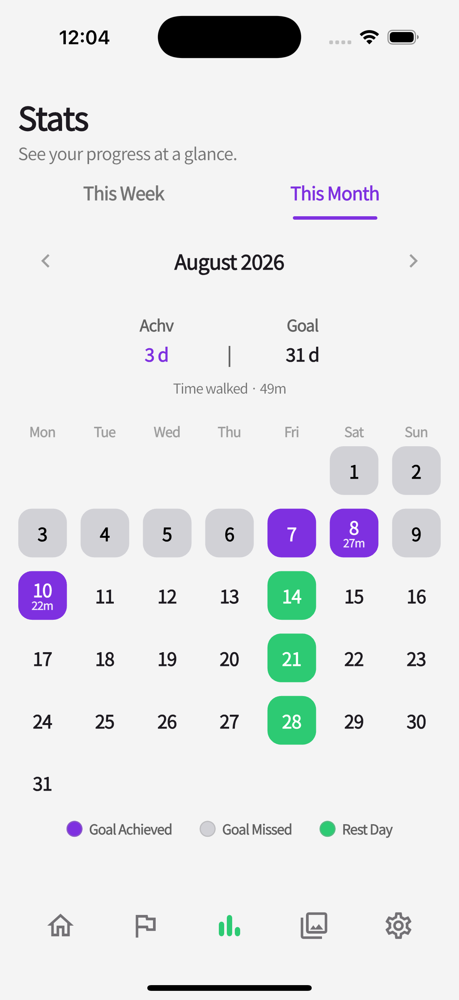

A timer that shows
the finish line.
Time left, the moment you hit your goal, and how far past it you walked.

Track consistency, not results.

Real habits aren't built on perfection. They're built on showing up — even on rest days.
No pressure. No competition.
Recording a rest day matters as much as recording a workout.
Time left, the moment you hit your goal, and how far past it you walked.

Add the walk by hand — start time included.

A different target each day — with the week's total goal time and active days at a glance.

Mark one date as a rest day without touching your repeating schedule — stats follow along.

Step back through the arrows and the bars you actually recorded are still there.

Achieved, missed, and rest days in one view — rest days shown as part of the plan.

Every template and GIF is free. Keep the day as a picture.

Keep me walking. ☕
Every template, every GIF, every feature is free.
The in-app purchase is a voluntary way to support the solo developer.
And your feedback matters even more.